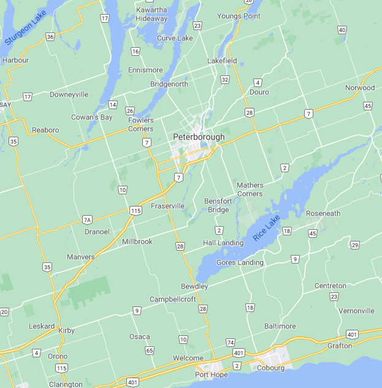
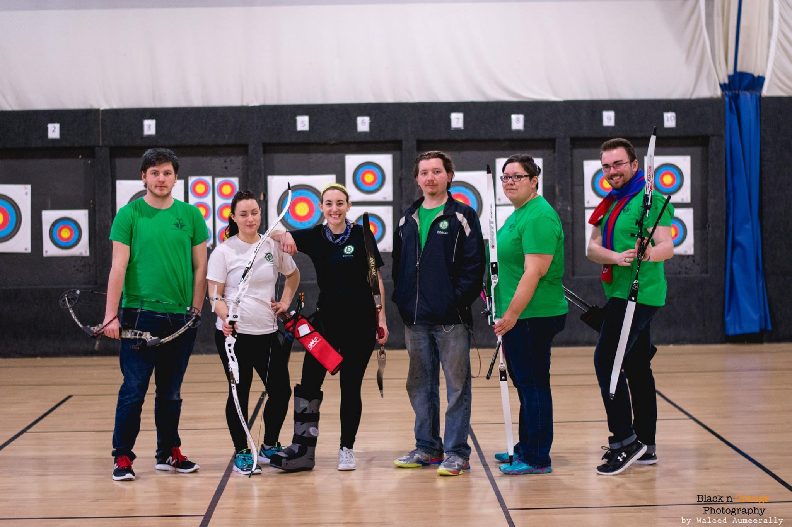

In 2014 I graduated from St.Lawrence College in Cornwall after completing the
2 year Motive Power Technician Diploma course. After graduating I moved to Peterborough, Ontario with my partner and worked in my field as a mechanic while she pursued her Bachelor's of Arts at Trent University.

while living in Peterborough I worked as an Automotive Technician at Mercedes-Benz,Manley Motors Lindsay and Holiday Ford as a technician and service advisor.
I am an avid fan of archery and when given the opportunity to be the Trent Archery club coach and equipment manager I happily took the role and have found great joy in the sport.

My partner graduated from Trent University in Spring, 2018 and we moved back to our home in Akwesasne where I chose to return to St.Lawrence College to pursue a goal of developing video games during the 2020 school year.